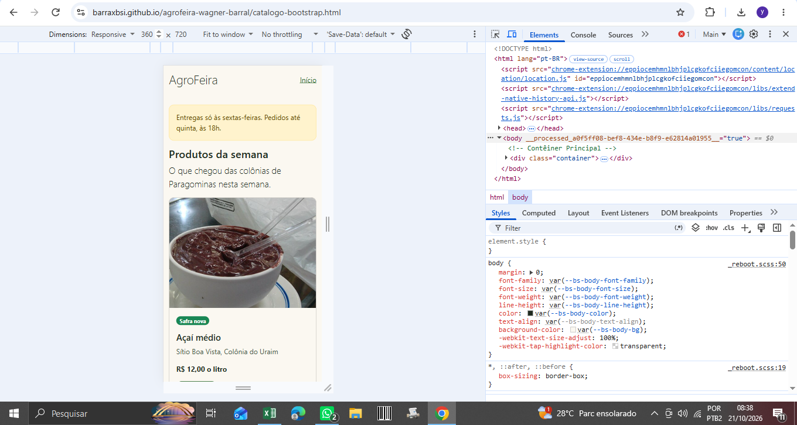
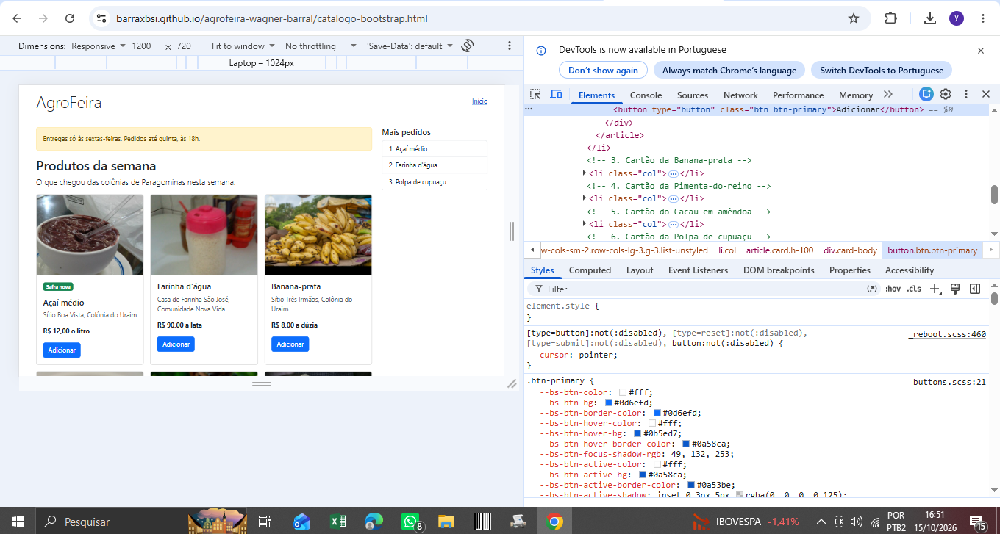
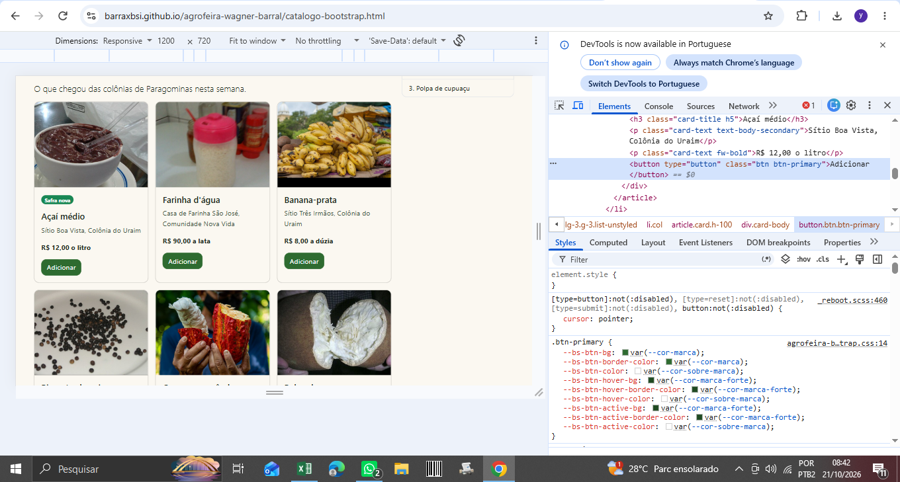
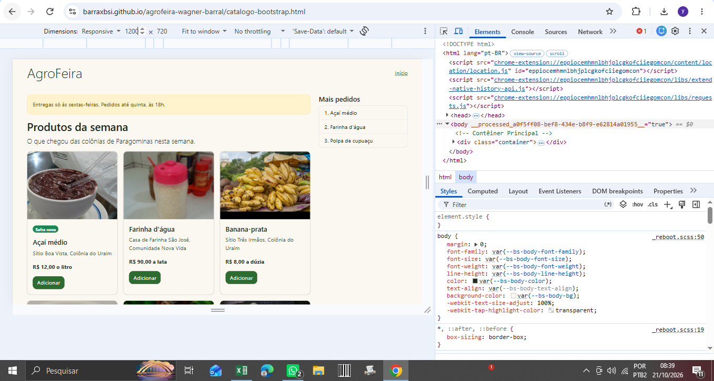
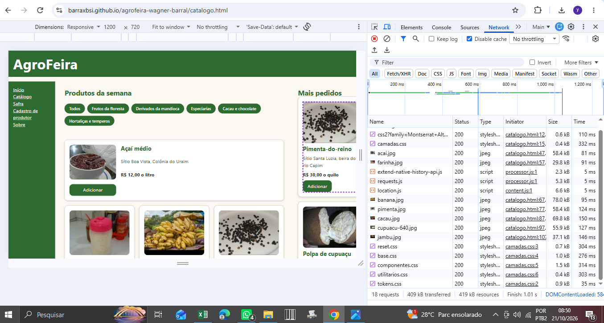
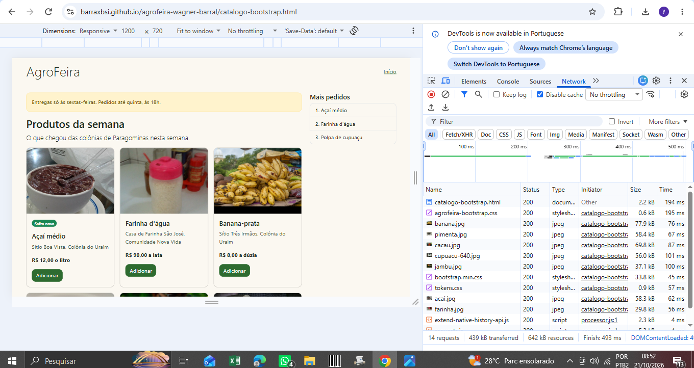
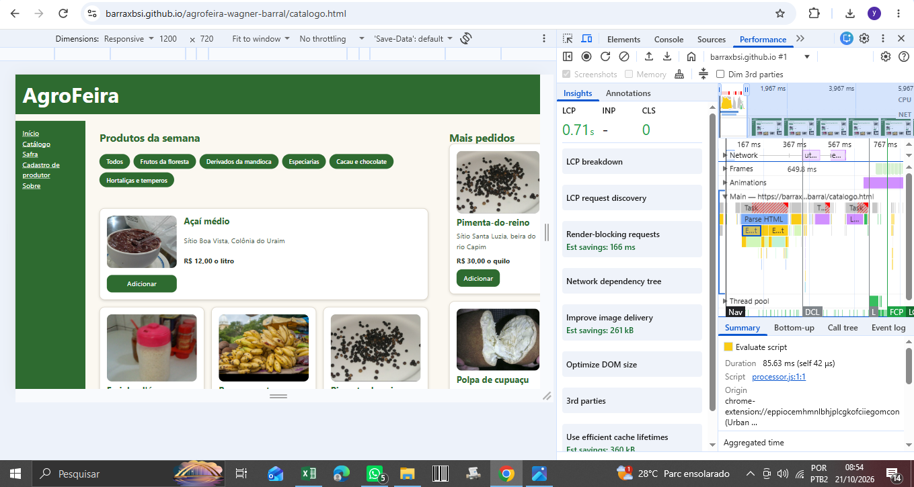
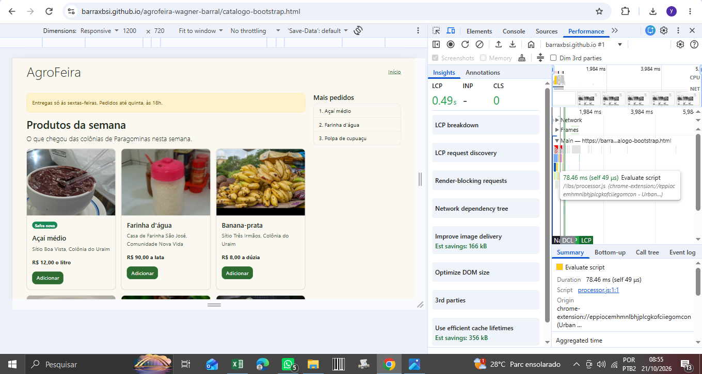

Relatório Comparativo de Desempenho e Arquitetura
Nome completo e matrícula: Wagner Barral — Matrícula: 20240001
Endereço do repositório: https://github.com/barraxbsi/agrofeira-wagner-barral
Endereços do site:
- Início: index.html
- Catálogo Autoral: catalogo.html
- Catálogo Bootstrap: catalogo-bootstrap.html
1. O catálogo em três larguras


2. A customização
A customização da variável --bs-primary foi realizada para alinhar a identidade visual padrão do framework Bootstrap com a paleta cromática verde do AgroFeira, garantindo coerência visual sem alterar diretamente os componentes internos da biblioteca.
| Variável | Valor Original | Valor Customizado |
|---|---|---|
| --bs-primary | #0d6efd | #2e6f40 (Verde AgroFeira) |


3. As medições de desempenho
As medições foram efetuadas utilizando o Google Chrome DevTools com o cache do navegador desativado (Disable cache) para registrar com precisão o peso dos recursos e o tempo de carregamento inicial (LCP).
| Métrica | Catálogo Autoral | Catálogo Bootstrap |
|---|---|---|
| Requisições totais | 18 requisições | 14 requisições |
| Volume de dados transferidos | 409 kB | 439 kB |
| Largest Contentful Paint (LCP) | 0.71 s | 0.49 s |




4. Análise crítica e conclusões
A arquitetura CSS autoral em camadas permitiu um controle granular fino sobre a estilização e o escopo das regras, resultando num volume ligeiramente menor de dados transferidos (409 kB contra 439 kB do Bootstrap). No entanto, o uso do framework Bootstrap ofereceu um carregamento inicial altamente otimizado para renderização (LCP de 0.49 s contra 0.71 s do autoral).
A substituição da variável de marca do Bootstrap provou ser uma estratégia eficiente de customização, mantendo a produtividade fornecida pelo framework enquanto atende estritamente às diretrizes visuais do projeto AgroFeira.